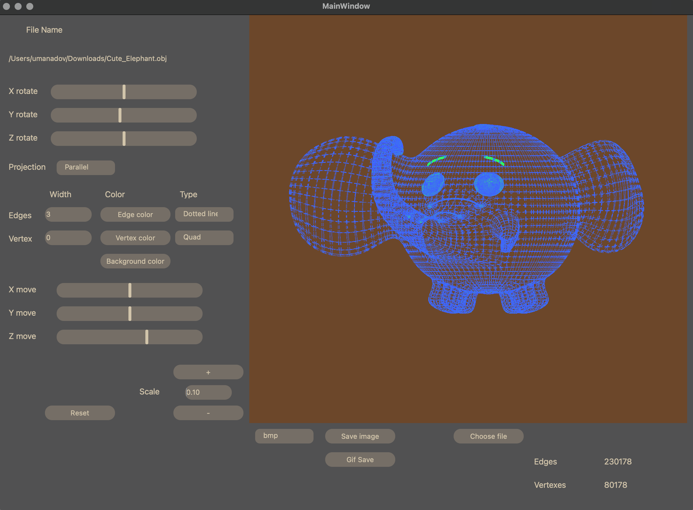

Папка Frontend содержит файлы визуальной состовляющей проекта
Папка Tests содержит файл для проверки работы парсера и аффинного преобразования
Doxyfile собирает документацию к проекту
Makefile
Загрузка каркасной модели из файла формата obj (поддержка только списка вершин и поверхностей).
Перемещени модели по осям X, Y, Z.
Вращение модели вокруг своих осей X, Y, Z.
Масштабирование модели на заданное значение.
Настраивание типа проекции (параллельная и центральная).
Настраивание типа, цвета и толщины ребер, способа отображения, цвета и размера вершин.
Выбор цвета фона.
Сохранение настроек между перезапусками программы.
Сохранение полученных ("отрендеренные") изображений в файл в форматах BMP и JPEG.
Запись небольших "скринкастов" - gif-анимации, демонстрирующие аффинные преобразования загруженной модели (640x480, 10fps, 5s).
- Код программы находится в папке `src`.
- Сборка осуществляется с использованием Makefile с набором стандартных целей ( install, uninstall, dist, clean, tests, gcov_report...).
Ввод в терминале make install. После установки в папке build появится приложение с названием 3D_Viewer.